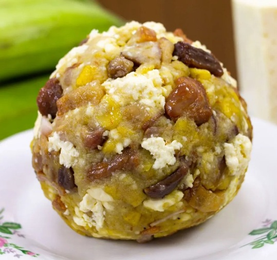

Home
Bolon de verde mixto

This is a traditional dish from Ecuador. Known as Bolon de verde. You can have it with only cheese or only pork crackling or a mixture of both.
- 4 green platains
- 1 cup of white cheese
- 2 cupos of Pork chicharron
- Oil for cooking
- Salt and Pepper
- Peel and chop the plantains. Heat the oil in a frying pan over medium heat and fry plantain pieces until they change color. Don’t let them harden.
- Transfer to another container and use your hands or fists to squish the plantains until a thick mash is formed. Season with salt to taste.
- Add the lard, chicharrón and cheese. Knead with your hands and form balls the size of tennis balls.
- You can serve this with fried eggs and a black coffee of your choice.